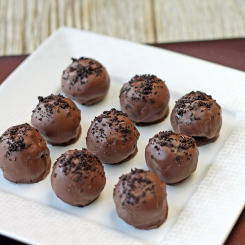

A long long time ago, some baking genius realized that another perfect pairing for Mr. Christie's Oreo cookies besides milk was cream cheese. Behold - Oreo Cheesecake truffles. Mmmmmm.
Things you will need
There are only a few easy steps. Best of all - no need for the oven. To start, grab a pack of Oreos (obviously). Dealer's choice from the Original, Double stuff, Golden Oreos...you get the point. Take that pack of oreos and crush them in a processor if you have one. Back in college, I didn't have that option and put the cookies in a ziploc bag before going crazy at it with my textbooks. I do not recommend using textbooks you want to sell later. Crushing oreos will make dents and marks on them.
Once the Oreos have been sufficiently crushed, blend in the cream cheese either by hand (a bit gross but works well) or with a fancy/not-so-fancy mixer. Although we stated you'll need a bar, you can add as much or as little as you'd like. Only note to make is that you'll want at least enough to be able to shape and mold your "dough".
Now that you have your dough, roll them into evenly shaped balls and set them out on a plate/pan lined with parchment paper. Place in fridge for at least 2 hours.
Melt your chocolate and have your sprinkles/nuts ready if you want to dip them. Take the truffle balls out of the fridge and proceed to either dip them in your chocolate or use a spoon and coat it. Once the chocolate's coated the truffle balls, pat them with your extra topping and serve!